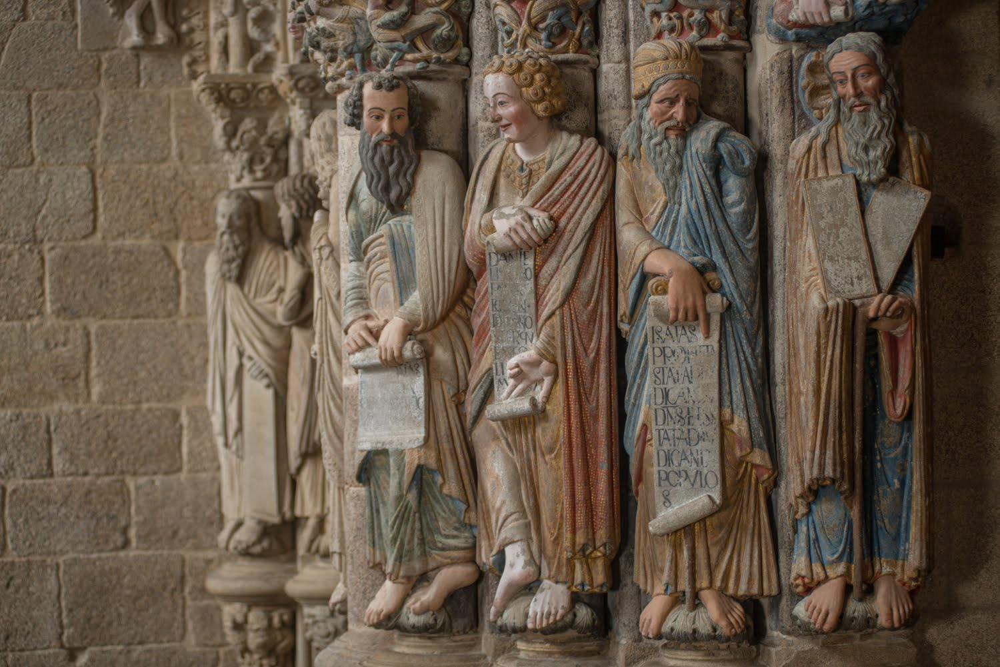

EXTERIOR

-EXTERIOR DE LA CATEDRAL
-Pórtico de la Gloria:
Es un pórtico de estilo románico realizado por el maestro Mateo por encargo del rey Fernando II. El pórtico se divide en tres arcos de medio punto que se corresponden con cada una de las tres naves de la iglesia, sostenidos por gruesos pilares con columnas adosadas. El arco central es el mayor (el doble que cada uno de los laterales), es el único que posee tímpano y está dividido por una columna central, el parteluz, con la figura de Santiago. Verticalmente, la franja inferior está formada por las bases de las columnas, decoradas con animales fantásticos, la franja media está formada por columnas que sustentan las estatuas adosadas de los Apóstoles y la superior por los arcos que coronan las tres puertas. El conjunto escultórico pretende ser una representación iconográfica de diferentes símbolos tomados del Apocalipsis de san Juan y de otros textos del Antiguo Testamento.

-Tímpano:
La disposición del tímpano está basada en la descripción de Cristo que hace el evangelista san Juan en el Apocalipsis. En el centro, se muestra el pantocrátor, mostrando en las manos y en los pies las heridas de la crucifixión. Rodeando a Cristo, el tetramorfos con las figuras de los cuatro evangelistas con sus atributos: a la izquierda, arriba san Juan y el águila y abajo san Lucas con el buey; a la derecha, arriba san Mateo sobre el cofre del recaudador de tributos y abajo san Marcos y el león. A ambos lados de los evangelistas, detrás de san Marcos y san Lucas, aparecen cuatro ángeles a cada lado con los instrumentos de la Pasión de Cristo. En la arquivolta del tímpano central se encuentran sentados los veinticuatro ancianos del Apocalipsis, sosteniendo cada uno un instrumento musical, como preparando un concierto en honor de Dios.
-Parteluz:
Se encuentra la figura sedente de Santiago Apóstol con un bastón de peregrino, como patrón de la basílica. La columna acaba sobre su cabeza con un capitel donde se representan las tentaciones de Cristo en tres de sus caras; en la que mira hacia el interior del templo, rezan dos ángeles arrodillados. Al pie del santo hay otro capitel con las figuras de la Santísima Trinidad. La columna reposa sobre una base donde hay una figura con barba hasta el pecho (quizás una imagen de Noé) y dos leones.
Jambas:
En las columnas de la puerta central y en las dos puertas laterales aparecen representados apóstoles, profetas y otras figuras, con sus atributos iconográficos. Todas están coronadas con su respectivo capitel donde se representan diferentes animales y cabezas humanas con motivos de hojas.Los cuatro puntales del pórtico se sustentan sobre basamentos donde se representan grupos de diversos animales y cabezas humanas con barba. Para algunos autores estas figuras son imágenes de demonios, y simbolizan que el peso de la gloria (el pórtico en este caso) aplasta al pecado. Otras fuentes le dan una interpretación apocalíptica, con guerras, hambre y muerte (representadas por las bestias), situaciones que solo se pueden salvar gracias a la inteligencia humana (las cabezas de los hombres ancianos).
